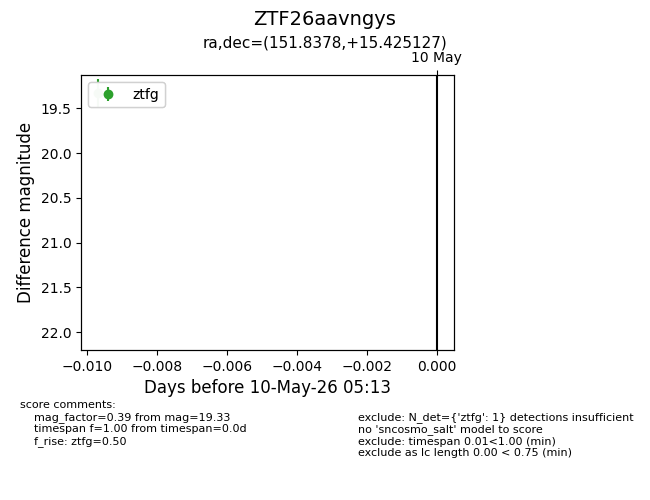
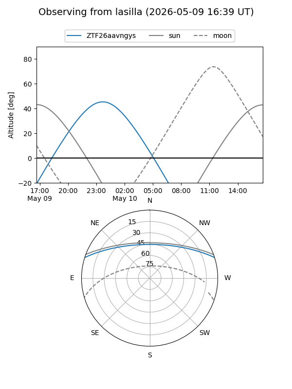
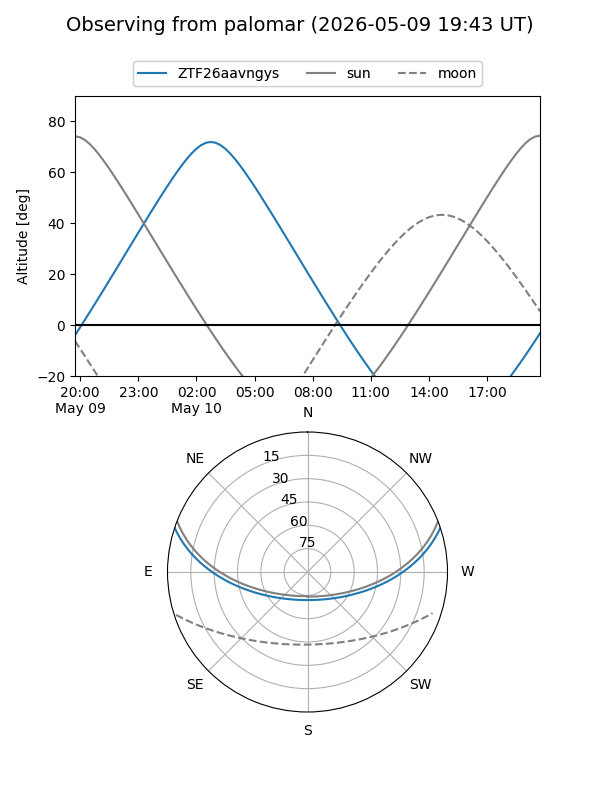

ZTF26aavngys
Target ZTF26aavngys at 2026-05-10 05:14
Aliases and brokers:
FINK: link
Lasair: link
ALeRCE: link
alt names
ZTF26aavngys (ztf,fink_ztf)
Coordinates:
equatorial (ra, dec) = 151.8378,+15.42513
equatorial (HMS+DMS) = 10:07:21.08,+15:25:30.46
galactic (l, b) = (221.4633,+50.22449)
Flags:
Photometry:
last ztfg=19.33
1 ztfg detections
Lightcurve

Visibility


Additional plots